TEAMPeople团队成员
People团队成员
Current members, students and alumni of the TDLI Muon Physics Group.课题组现任成员、学生与校友。

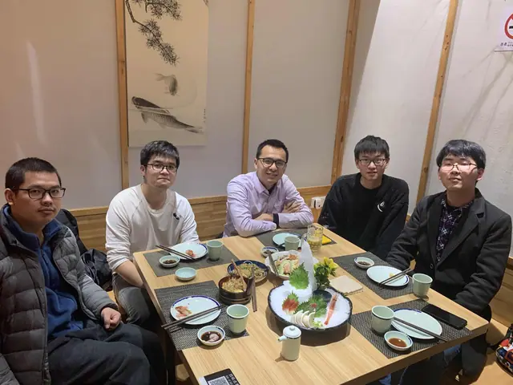

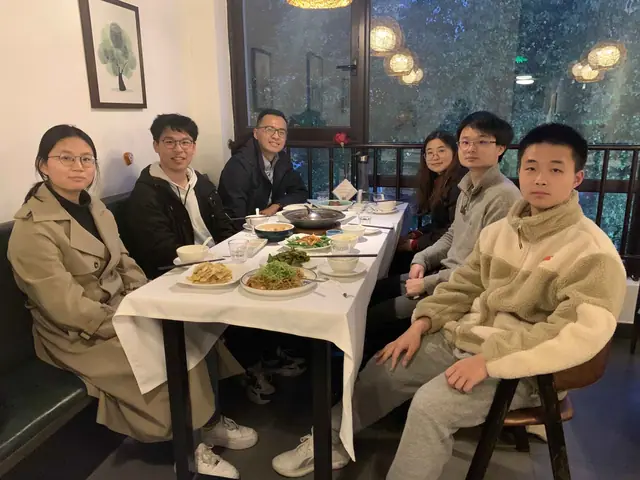

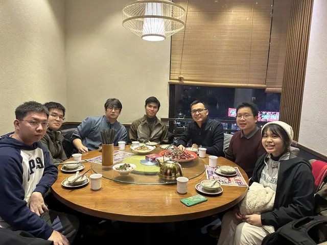

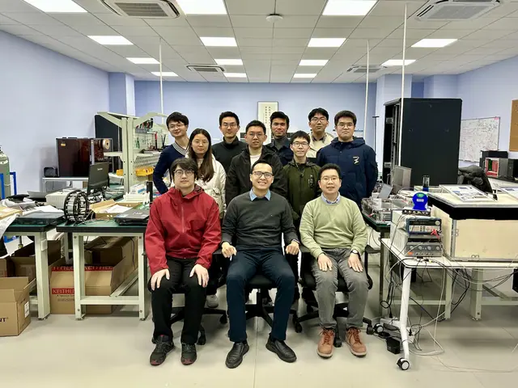

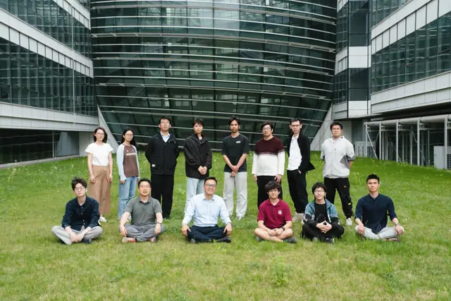

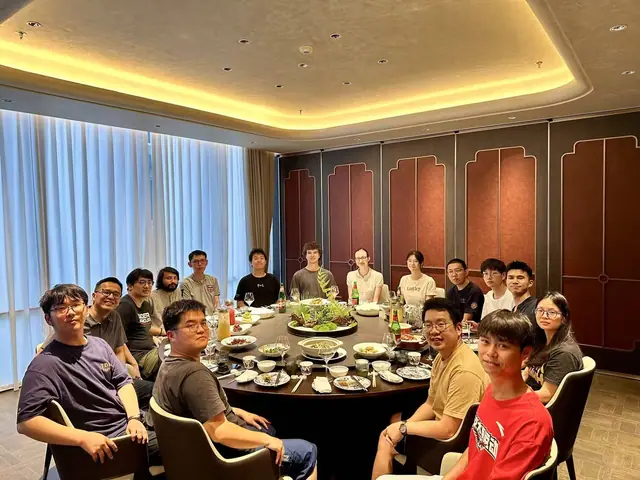

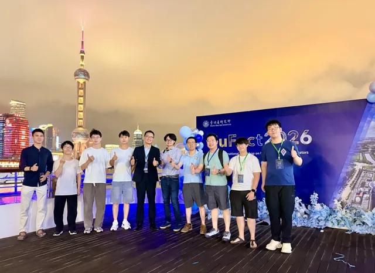

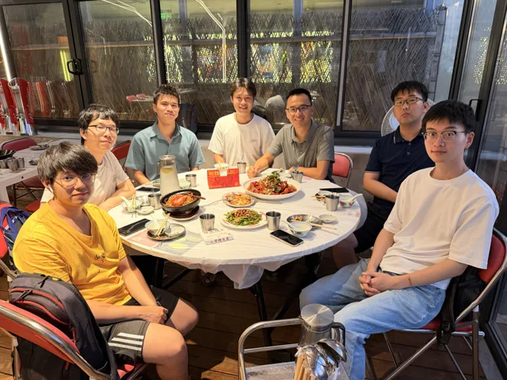
Principal Investigator

Kim Siang Khaw【许金祥】(2019 – Present, Muon g-2, muEDM, SHINE Muon Source and Muography)
Tenured Fellow, Tsung-Dao Lee Institute, and Tenured Associate Professor, School of Physics and Astronomy, SJTUProfile & papers →个人主页与论文 →
Research Assistant

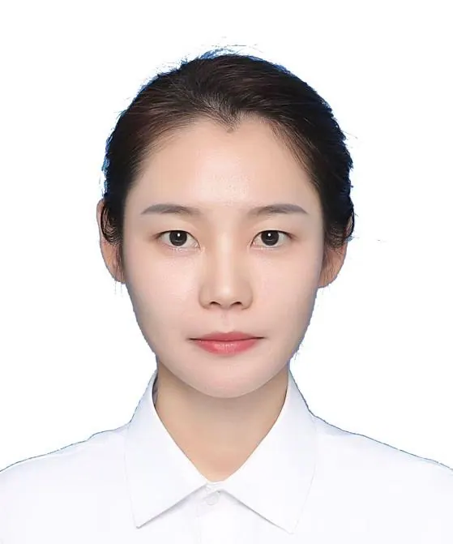
Mengjie Wu【吴梦洁】(2025.02 – Present, Muography)Profile & papers →个人主页与论文 →
Postdoctoral Researchers

Samy Kaci (2026.10 – Present, Postdoctoral Researcher)
2026: Ph.D., Tsung-Dao Lee Institute, Shanghai Jiao Tong University, ChinaProfile & papers →个人主页与论文 →
Doctoral Students

Yonghao Zeng【曾永浩】(2022.09 – Present, Muon g-2 and muEDM)Profile & papers →个人主页与论文 →

Jiangtao Wang【王江涛】(2022.09 – Present, Shanghai Muon Source and Muography)Profile & papers →个人主页与论文 →

Xingyun Huang【黄幸运】 (2024.09 – Present, muEDM and Muography)Profile & papers →个人主页与论文 →

Jun Kai Ng【黄俊凯】(2024.09 – Present, Shanghai Muon Source)Profile & papers →个人主页与论文 →

Yinghe Wang【王赢鹤】(2024.11 – Present, Muography)Profile & papers →个人主页与论文 →

Guan Ming Wong【黄冠铭】(2025.09 – Present, muEDM)Profile & papers →个人主页与论文 →

Jing Tian Yong【杨景天】(2026.09 – Present)
2026: Bachelor, Xiamen University Malaysia (XMUM), MalaysiaProfile & papers →个人主页与论文 →
Master's Students

Jia Cheng Yap【叶嘉诚】(2024.09 – Present, SHINE Muon Source)Profile & papers →个人主页与论文 →
Undergraduate Students
SJTU Bole Program【伯乐计划】(2026 – 2028)

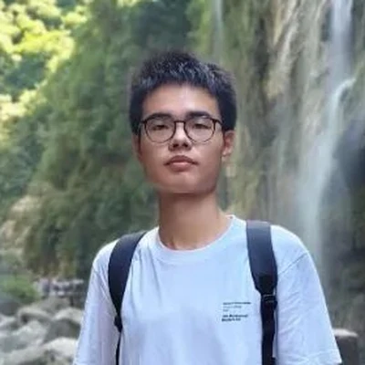
Yuheng Du【杜语衡】(2026.02 – Present, muEDM)Profile & papers →个人主页与论文 →
University Student Innovation and Entrepreneurship Training Program 2024-2025

Yifei Li【李逸飞】(2024.09 – Present, Shanghai Muon Radiography)Profile & papers →个人主页与论文 →


High School Students
We are looking for self-motivated and enthusiastic high school students!
Theses & student research archive →学位论文与学生科研档案 →
Former members
We sincerely thank all the former members of our group, as they have contributed significantly to the development of the muon physics group.

Beining Rao【饶倍宁】(2023.09 – 2026.06, Bachelor thesis and Zhiyuan Scholar Research Program, Positronium Physics) [Currently PhD student at Indiana University]

Zeyu Luo【罗泽宇】(2023.09 – 2026.06, Zhiyuan Scholar Research Program, Positronium Physics) [Currently PhD student at TDLI]

Xuerui Liu【刘学睿】(2023.09 – 2026.06, Zhiyuan Scholar Research Program, Positronium Physics)

Zhou Xu【徐洲】(2025.09 – 2026.06, 48th PRP, Multi-wire Proportional Chamber)

Beiyao Shi【史贝尧】(2025.09 – 2026.06, Bachelor thesis and 48th PRP, Multi-wire Proportional Chamber) [Currently Master student at the University of Tokyo]

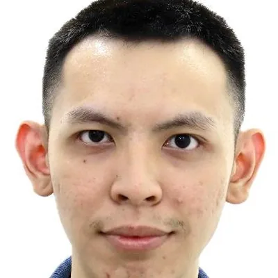
Min Yang Tan【陈铭扬】(2024.09 – 2026.08, Doctoral Student, Muography)
Darwin Lo(2026.07 – 2026.08, UG at Imperial College London, SJTU Summer Research Internship, Muon Scattering Tomography)

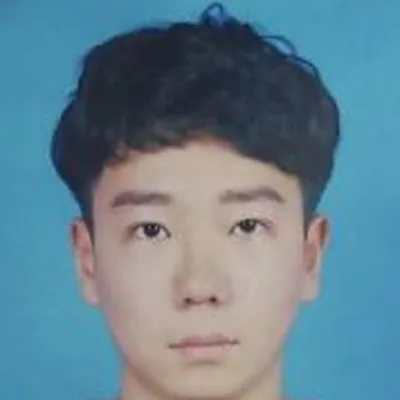
Wujie Zhang【张武杰】(2025.11 – 2026.05, Internship in Engineering, Electronics for Shanghai Muography)
Zihong Li【李梓宏】(2025.11 – 2026.05, Internship in Engineering, Mechanical Engineering)

Siew Yan Hoh【何守仁】(2023.12 – 2025.12, Postdoctoral Researcher, Muon g-2 and muEDM) [Currently Associate Professor at Xiamen University Malaysia]

Yusuke Takeuchi【竹内 佑甫】(2023.12 – 2025.12, Postdoctoral Researcher, Muon g-2 and Shanghai Muon Source)

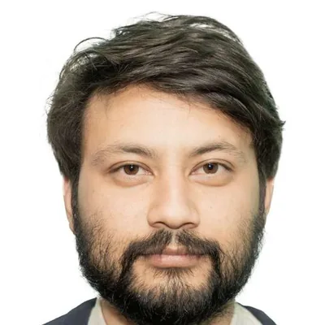
Samip Basnet(2025.02 – 2025.11, Postdoctoral Researcher, muEDM and Muography)
Junyi Gu 【谷骏逸】(2025.08 – 2025.09, UG at XMUM)
Qi Jie Tin(2025.07 – 2025.09, UG at UTM)
Martina Pretesi(2025.06 – 2025.08, UG at UCL)
Jing Tian Yong【杨景天】(2025.06 – 2025.08, UG at XMUM)
Yuting Gademski(2025.06 – 2025.08, UG at UCL)
Pedro Salvatico(2025.06 – 2025.08, UG at FICSAE)
Ning Yan【闫宁】(2024.03 – 2024.08, Shanghai Muon Radiography)
Hanyu Fang【方涵宇】(2024.02 – 2025.02, Atmospheric muon spin rotation)
Tongjia Zhang【张童嘉】(2024.02 – 2025.02, Atmospheric muon spin rotation)
Dong Zhang【张栋】(2024.01 – 2024.06, High School Research Projects, Muon Positioning System)
Jiayi Hao【郝嘉逸】(2024.01 – 2024.06, High School Research Projects, Muon Flux Variations and Their Correlation with Earth and Space Weather)
Liang Wang【王量】(2023.02 – 2024.03, Shanghai Muon Source)
Siyuan Chen【陈思元】(2023.02 – 2024.03, Shanghai Muon Source)


Yimin Wan【万一民】(2022.09 – 2024.06, Spark Chamber for Muon Physics)
Cheng Chen【陈程】(2021.06 – 2023.07, Postdoctoral Researcher, Muon g-2)
Yichi Xu【徐亦驰】(2021.09 – 40th PRP and Physics Research Practice, Laboratory Muon Physics)
Zhen Wu【吴真】(2022.03 – 2022.07, Physics Research Practice, Laboratory Muon Physics)
Kaihua Xue【薛恺华】(2022.03 – 2022.07, Physics Research Practice, Laboratory Muon Physics)
Lucine Tabatt(2021.07 – 2021.10, Dark SHINE, DAAD RISE Worldwide Program) [Currently at ETH Zurich]

Le He【何乐】(2020.09 – 2021.09, Dark SHINE, 38th Participation in Research Program, PRP)
Desmond He【何征霆】(2020.10 – 2021.09, Dark SHINE, TDLI Visiting Student) [Currently at ETH Zurich]
Eremey Valetov(2020.03 – 2021.05, Postdoctoral Researcher, Muon g-2) [Currently at PSI]
Hanqing Liu【刘汗青】(2020.09 – 2021.08, Master Student, muEDM and Dark SHINE)
Xuechun Chen【陈雪纯】(2020.06 – 2020.08, Research Assistant, Dark SHINE)